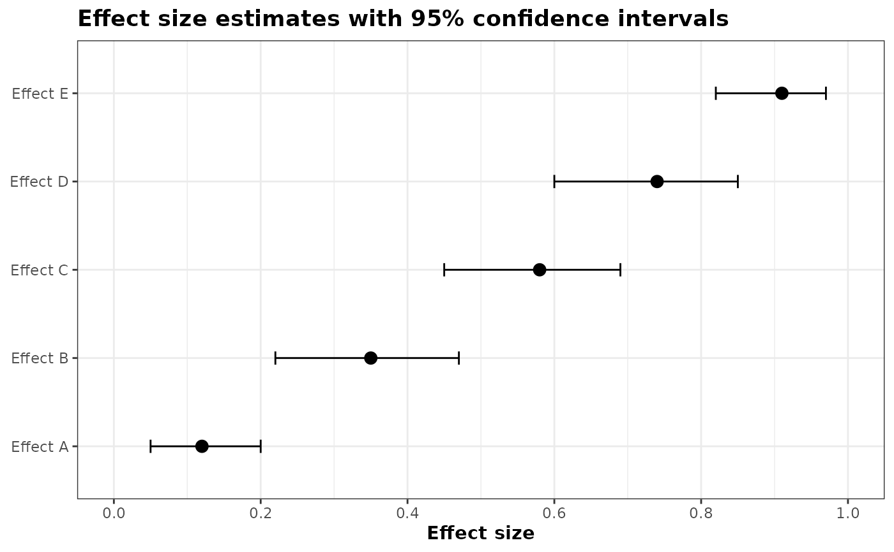
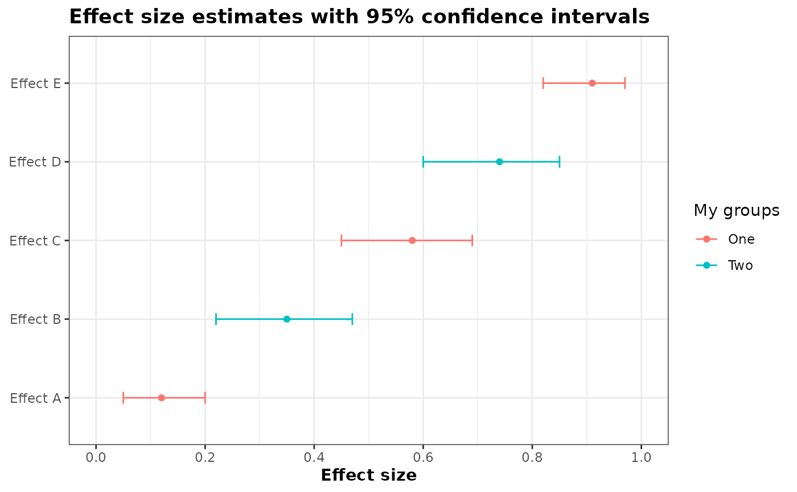

Plot effect-size estimates and confidence intervals. All values must be between 0 and 1.
plot_effectsize_01_intervals.RdCreate a horizontal interval plot of effect-size estimates (values between 0 and 1) with their lower/upper confidence bounds. The y-axis shows effect labels and the x-axis gives the effect size values.
Usage
plot_effectsize_01_intervals(
d,
variable_name,
value_name,
group_name = NULL,
group_label = group_name,
colors = NULL,
xaxis_label = "Effect size",
lower_name = "lower",
upper_name = "upper",
title = "Effect size estimates with 95% confidence intervals",
sort = TRUE,
descending = FALSE,
dot_size = 3
)Arguments
- d
data.frame: data containing the effect labels, estimates and bounds.
- variable_name
character(1): column name in
dwith variable names for the y-axis.- value_name
character(1): column name in
dwith estimates (numeric, expected 0..1).- group_name
character(1) or NULL: optional column name in
dused to color points/lines by group.- group_label
character(1) or NULL: label to show in the legend when
group_nameis used. Defaults togroup_name.- colors
character(1) or NULL: optional character vector (or named character vector) of colours to map to groups; names should match group values. If NULL (default) uses ggplot2 defaults.
- xaxis_label
character(1): label for the x axis (default "Effect size").
- lower_name
character(1): column name in
dwith CI lower bound (numeric, default "lower").- upper_name
character(1): column name in
dwith CI upper bound (numeric, default "upper").- title
character(1): plot title (default "Effect size estimates with 95% confidence intervals").
- sort
logical: sort rows by the estimate before plotting (default TRUE).
- descending
logical: if TRUE place largest estimates at the top (default TRUE).
- dot_size
numeric(1): size of the points (default 3). Use smaller values to make points less prominent relative to CI lines.
Examples
df <- data.frame(
effect = paste0("Effect ", LETTERS[1:5]),
estimate = c(0.12, 0.35, 0.58, 0.74, 0.91),
lower = c(0.05, 0.22, 0.45, 0.60, 0.82),
upper = c(0.20, 0.47, 0.69, 0.85, 0.97),
group = rep(c("One","Two"), length.out = 5)
)
# Example with no group colors
plot_effectsize_01_intervals(
d = df,
variable_name = "effect",
value_name = "estimate",
lower_name = "lower",
upper_name = "upper"
)

# Example with group colors
plot_effectsize_01_intervals(
d = df,
variable_name = "effect",
value_name = "estimate",
group_name = "group",
group_label = "My groups",
lower_name = "lower",
upper_name = "upper",
dot_size = 1.5
)
